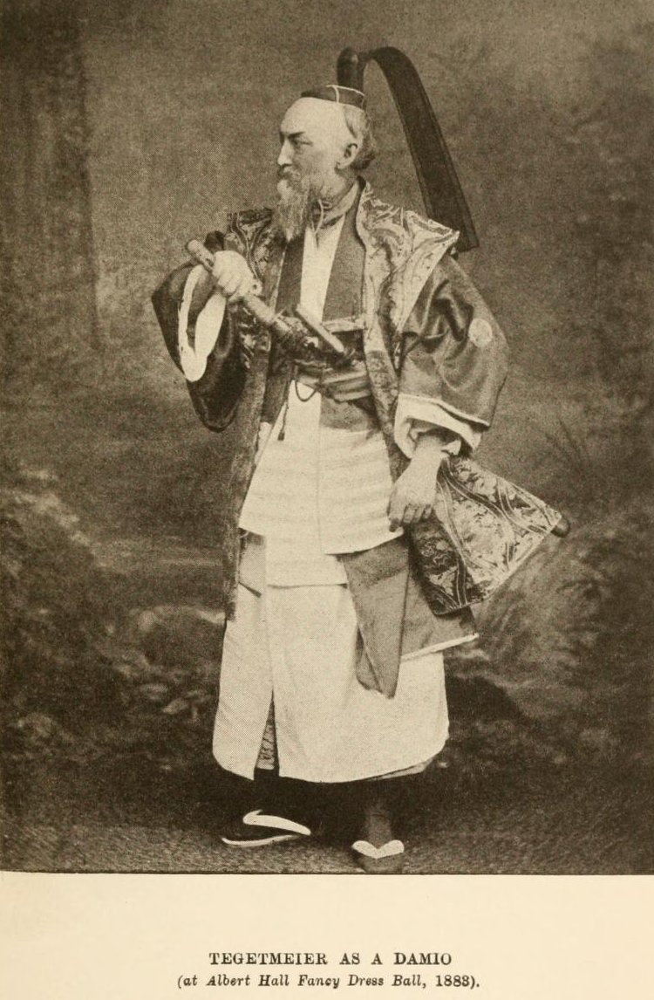

Monday, November the 5th, 2012
back to: title, date or indexes
“Dear Sir, I have been thinking over your offer of helping me to the dead bodies of some of the good birds of Poultry”, wrote Charles Darwin to William Bernhardt Tegetmeier. Tegetmeier is pictured below, and you can read more about him at The Friends Of Charles Darwin.
